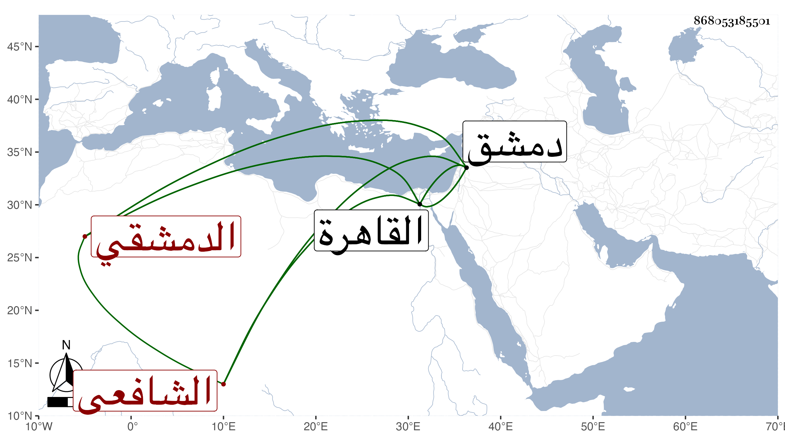

0902Sakhawi.DawLamic.ITO20230111-ara1.EIS1600.868053185501
Biography ID: 868053185501
250
عبد الرحمن بن عبد الله بن عبد الرحمن بن محمد بن محمد بن شرف الزين ابن اللؤلؤي الدمشقي الشافعي أخو النجم محمد والتقي أبي بكر الآتيين وهو أوسط الثلاثة سنا وأصغر فضلا ويعرف كسلفه بابن قاضي عجلون . ولد في سنة تسع وثلاثين وثمانمائة بدمشق ونشأ بها في كنف أبيه فقرأ القرآن على الزين خطاب وحفظ العمدة والمنهاج وجمع الجوامع وتصريب العزى والكافية وعرض على جماعة كالتقي الأذرعي والبدر بن قاضي شهبة وبالقاهرة على شيخنا في آخرين وأحصر على العلاء بن بردس وتفقه بوالده وأخيه النجم وخطاب بل وأخذ في القاهرة عن الجلال المحلي والعربية عن الشرواني ودخل القاهرة غير مرة أولها في سنة احدى وخمسين وكذا حج غير مرة وكان مع الزيني بن مزهر في الرجبية لاختصاصه به فكنت أراه هناك يعرض على بعض الفضلاء كل يوم جانبا من محافيظه وناب في القضاء بدمشق عن الولوي البلقيني فمن بعده ، وكان فاضلا لطيف العشرة خفيف الروح حسن الملتقى سريع الحركة والكلام محبا في لقاء الأكابر سليم الفطرة مات بدمشق في ربيع الآخر سنة ثمان وسبعين ، وكان قد توجه بعد دفن أخيه بالقاهرة اليها فابتدأ به التوعك ، واستمر يعتريه وقتا فوقتا حتى قضى رحمه الله وعفا عنه .
